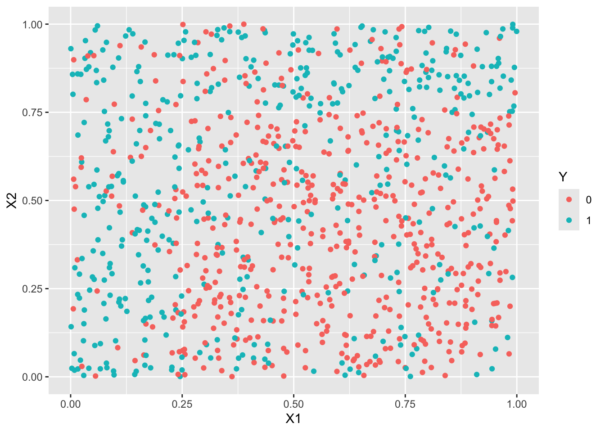
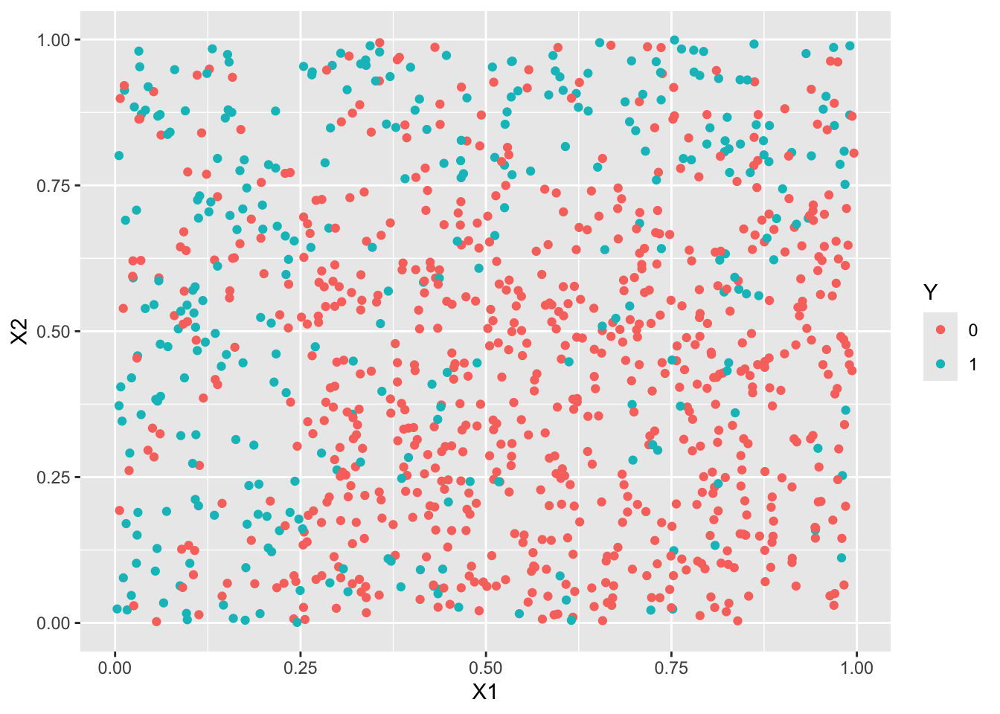
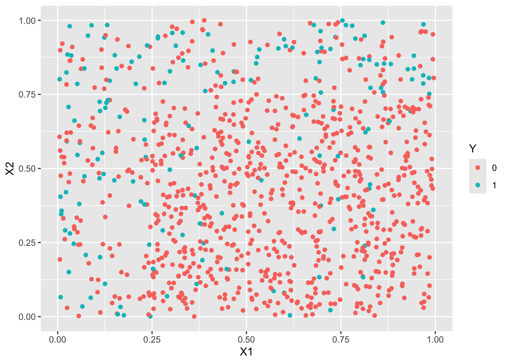
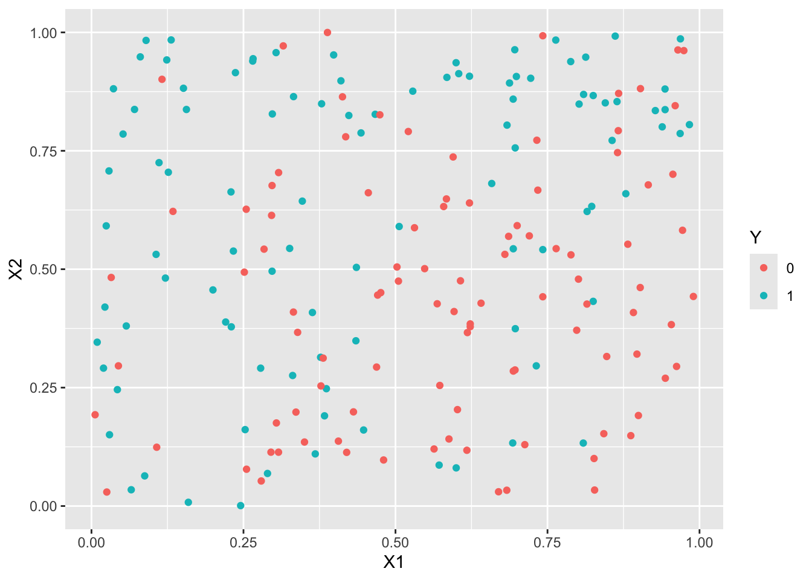
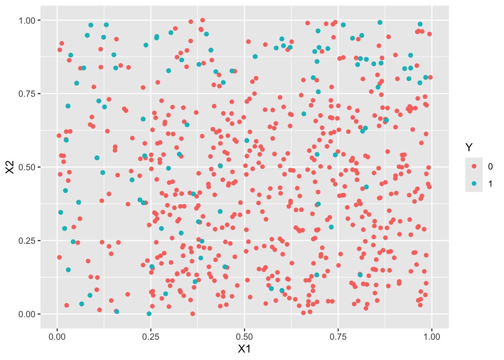
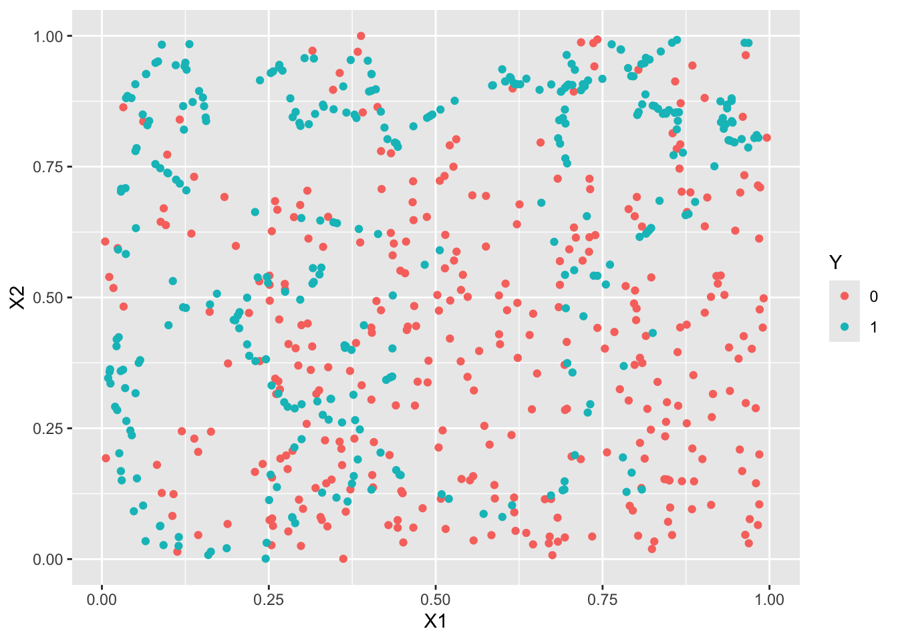
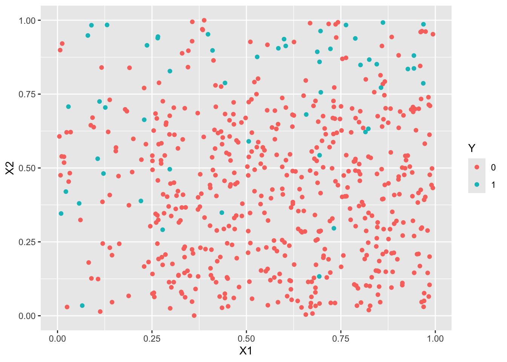

15 Données déséquilibrées
library(tidyverse)Exercice 1 (Critères pour un exemple de données déséquilibrées)
set.seed(1235) n <- 500 Y <- rbinom(n,1,0.05) %>% as.factor()set.seed(12345) P1 <- rbinom(n,1,0.005) %>% factor(levels=c("0","1"))set.seed(123) P2 <- rep(0,n) P2[Y==1] <- rbinom(sum(Y==1),1,0.85) P2[Y==0] <- rbinom(sum(Y==0),1,0.1) P2 <- factor(P2,levels=c("0","1"))table(P1,Y)Y P1 0 1 0 473 24 1 3 0table(P2,Y)Y P2 0 1 0 432 8 1 44 16T2 <- table(P2,Y) acc <- sum(T2[c(1,4)])/sum(T2) rec <- T2[2,2]/sum(T2[,2]) prec <- T2[2,2]/sum(T2[2,]) c(acc,rec,prec)[1] 0.8960000 0.6666667 0.2666667F1 <- 2*(rec*prec)/(rec+prec) F1[1] 0.3809524rand <- sum(T2[1,])/n*sum(T2[,1])/n+sum(T2[2,])/n*sum(T2[,2])/n kappa <- (acc-rand)/(1-rand) kappa[1] 0.3353783Retrouver ces indicateurs à l’aide de la fonction confusionMatrix de caret puis comparer les prévisions P1 et P2.
::: {.cell}
library(yardstick) df <- data.frame(Y,P1,P2) multi_metric <- metric_set(accuracy,recall,precision,f_meas,kap) df %>% pivot_longer(-Y,names_to = "algo",values_to = "prev") %>% group_by(algo) %>% multi_metric(truth=Y,estimate = prev,event_level = "second") %>% pivot_wider(names_from = algo,values_from = .estimate) %>% select(-2)::: {.cell-output .cell-output-stdout}
# A tibble: 5 × 3 .metric P1 P2 <chr> <dbl> <dbl> 1 accuracy 0.946 0.896 2 recall 0 0.667 3 precision 0 0.267 4 f_meas 0 0.381 5 kap -0.0108 0.335::: :::
Exercice 2 (Échantillonnage rétrospectif) On remarque d’abord que \(\mathbf P(\tilde y_i=1)=\mathbf P(y_i=1|s_i=1)\). De plus \[ \text{logit}\, p_\beta(x_i)=\log\frac{\mathbf P(y_i=1)}{\mathbf P(y_i=0)}\quad\text{et}\quad \text{logit}\, p_\gamma(x_i)=\log\frac{\mathbf P(y_i=1|s_i=1)}{\mathbf P(y_i=0|s_i=1)}. \] Or \[ \mathbf P(y_i=1|s_i=1)=\frac{\mathbf P(y_i=1,s_i=1)}{\mathbf P(s_i=1)}=\frac{\mathbf P(s_i=1|y_i=1)\mathbf P(y_i=1)}{\mathbf P(s_i=1)} \] et \[ \mathbf P(y_i=0|s_i=1)=\frac{\mathbf P(y_i=0,s_i=1)}{\mathbf P(s_i=1)}=\frac{\mathbf P(s_i=1|y_i=0)\mathbf P(y_i=0)}{\mathbf P(s_i=1)}. \] Donc \[ \text{logit}\, p_\gamma(x_i)=\log\frac{\mathbf P(y_i=1)}{\mathbf P(y_i=0)}+\log\frac{\mathbf P(s_i=1|y_i=1)}{\mathbf P(s_i=1|y_i=0)}=\text{logit}\,p_\beta(x_i)+\log\left(\frac{\tau_{1i}}{\tau_{0i}}\right). \]
Exercice 3 (Rééquilibrage)
df1 <- read.csv("../donnees/dd_exo3_1.csv") %>% mutate(Y=as.factor(Y)) df2 <- read.csv("../donnees/dd_exo3_2.csv") %>% mutate(Y=as.factor(Y)) df3 <- read.csv("../donnees/dd_exo3_3.csv") %>% mutate(Y=as.factor(Y))summary(df1$Y)0 1 559 441summary(df2$Y)0 1 692 308summary(df3$Y)0 1 842 158ggplot(df1)+aes(x=X1,y=X2,color=Y)+geom_point()
ggplot(df2)+aes(x=X1,y=X2,color=Y)+geom_point()
ggplot(df3)+aes(x=X1,y=X2,color=Y)+geom_point()
library(caret) set.seed(123) a1 <- createDataPartition(1:nrow(df1),p=2/3) a2 <- createDataPartition(1:nrow(df2),p=2/3) a3 <- createDataPartition(1:nrow(df3),p=2/3) train1 <- df1[a1$Resample1,] train2 <- df2[a2$Resample1,] train3 <- df3[a3$Resample1,] test1 <- df1[-a1$Resample1,] test2 <- df2[-a2$Resample1,] test3 <- df3[-a3$Resample1,]logit1 <- glm(Y~.^2,data=train1,family=binomial) logit2 <- glm(Y~.^2,data=train2,family=binomial) logit3 <- glm(Y~.^2,data=train3,family=binomial) p1 <- predict(logit1,newdata=test1,type="response") %>% round() %>% as.factor() p2 <- predict(logit2,newdata=test2,type="response") %>% round() %>% as.factor() p3 <- predict(logit3,newdata=test3,type="response") %>% round() %>% as.factor()confusionMatrix(data=p1,reference=test1$Y)Confusion Matrix and Statistics Reference Prediction 0 1 0 139 53 1 45 95 Accuracy : 0.7048 95% CI : (0.6526, 0.7534) No Information Rate : 0.5542 P-Value [Acc > NIR] : 1.282e-08 Kappa : 0.3994 Mcnemar's Test P-Value : 0.4795 Sensitivity : 0.7554 Specificity : 0.6419 Pos Pred Value : 0.7240 Neg Pred Value : 0.6786 Prevalence : 0.5542 Detection Rate : 0.4187 Detection Prevalence : 0.5783 Balanced Accuracy : 0.6987 'Positive' Class : 0confusionMatrix(data=p2,reference=test2$Y)Confusion Matrix and Statistics Reference Prediction 0 1 0 206 52 1 27 47 Accuracy : 0.762 95% CI : (0.7125, 0.8068) No Information Rate : 0.7018 P-Value [Acc > NIR] : 0.008642 Kappa : 0.387 Mcnemar's Test P-Value : 0.006930 Sensitivity : 0.8841 Specificity : 0.4747 Pos Pred Value : 0.7984 Neg Pred Value : 0.6351 Prevalence : 0.7018 Detection Rate : 0.6205 Detection Prevalence : 0.7771 Balanced Accuracy : 0.6794 'Positive' Class : 0confusionMatrix(data=p3,reference=test3$Y)Confusion Matrix and Statistics Reference Prediction 0 1 0 274 58 1 0 0 Accuracy : 0.8253 95% CI : (0.7801, 0.8646) No Information Rate : 0.8253 P-Value [Acc > NIR] : 0.535 Kappa : 0 Mcnemar's Test P-Value : 7.184e-14 Sensitivity : 1.0000 Specificity : 0.0000 Pos Pred Value : 0.8253 Neg Pred Value : NaN Prevalence : 0.8253 Detection Rate : 0.8253 Detection Prevalence : 1.0000 Balanced Accuracy : 0.5000 'Positive' Class : 0On remarque que l’accuracy est meilleure pour le 3ème échantillon, contrairement à des indicateurs tels que le \(\kappa\) de Cohen ou le balanced accuracy.
library(UBL) set.seed(1243) train3.over <- RandOverClassif(Y~.,dat=train3) train3.smote <- SmoteClassif(Y~.,dat=train3) train3.under <- RandUnderClassif(Y~.,dat=train3) train3.tomek <- TomekClassif(Y~.,dat=train3)[[1]]ggplot(train3.under)+aes(x=X1,y=X2,color=Y)+geom_point()
ggplot(train3.over)+aes(x=X1,y=X2,color=Y)+geom_point()
ggplot(train3.smote)+aes(x=X1,y=X2,color=Y)+geom_point()
ggplot(train3.tomek)+aes(x=X1,y=X2,color=Y)+geom_point()
logit3.over <- glm(Y~.^2,data=train3.over,family=binomial) logit3.smote <- glm(Y~.^2,data=train3.smote,family=binomial) logit3.under <- glm(Y~.^2,data=train3.under,family=binomial) logit3.tomek <- glm(Y~.^2,data=train3.tomek,family=binomial) p3.over <- predict(logit3.over,newdata=test3,type="response") %>% round() %>% as.factor() p3.smote <- predict(logit3.smote,newdata=test3,type="response") %>% round() %>% as.factor() p3.under <- predict(logit3.under,newdata=test3,type="response") %>% round() %>% as.factor() p3.tomek <- predict(logit3.tomek,newdata=test3,type="response") %>% round() %>% as.factor()confusionMatrix(p3.over,test3$Y)Confusion Matrix and Statistics Reference Prediction 0 1 0 182 9 1 92 49 Accuracy : 0.6958 95% CI : (0.6432, 0.7448) No Information Rate : 0.8253 P-Value [Acc > NIR] : 1 Kappa : 0.3255 Mcnemar's Test P-Value : 3.37e-16 Sensitivity : 0.6642 Specificity : 0.8448 Pos Pred Value : 0.9529 Neg Pred Value : 0.3475 Prevalence : 0.8253 Detection Rate : 0.5482 Detection Prevalence : 0.5753 Balanced Accuracy : 0.7545 'Positive' Class : 0confusionMatrix(p3.smote,test3$Y)Confusion Matrix and Statistics Reference Prediction 0 1 0 181 9 1 93 49 Accuracy : 0.6928 95% CI : (0.6401, 0.742) No Information Rate : 0.8253 P-Value [Acc > NIR] : 1 Kappa : 0.3217 Mcnemar's Test P-Value : <2e-16 Sensitivity : 0.6606 Specificity : 0.8448 Pos Pred Value : 0.9526 Neg Pred Value : 0.3451 Prevalence : 0.8253 Detection Rate : 0.5452 Detection Prevalence : 0.5723 Balanced Accuracy : 0.7527 'Positive' Class : 0confusionMatrix(p3.under,test3$Y)Confusion Matrix and Statistics Reference Prediction 0 1 0 187 11 1 87 47 Accuracy : 0.7048 95% CI : (0.6526, 0.7534) No Information Rate : 0.8253 P-Value [Acc > NIR] : 1 Kappa : 0.325 Mcnemar's Test P-Value : 3.56e-14 Sensitivity : 0.6825 Specificity : 0.8103 Pos Pred Value : 0.9444 Neg Pred Value : 0.3507 Prevalence : 0.8253 Detection Rate : 0.5633 Detection Prevalence : 0.5964 Balanced Accuracy : 0.7464 'Positive' Class : 0confusionMatrix(p3.tomek,test3$Y)Confusion Matrix and Statistics Reference Prediction 0 1 0 274 55 1 0 3 Accuracy : 0.8343 95% CI : (0.7899, 0.8727) No Information Rate : 0.8253 P-Value [Acc > NIR] : 0.3641 Kappa : 0.0826 Mcnemar's Test P-Value : 3.305e-13 Sensitivity : 1.00000 Specificity : 0.05172 Pos Pred Value : 0.83283 Neg Pred Value : 1.00000 Prevalence : 0.82530 Detection Rate : 0.82530 Detection Prevalence : 0.99096 Balanced Accuracy : 0.52586 'Positive' Class : 0Les indicateurs adaptés aux données déséquilibrées sont améliorés, on détecte mieux les 1 (quitte à faire plus d’erreur sur les 0).
Exercice 4 (Rééquilibrage et information de Fisher)